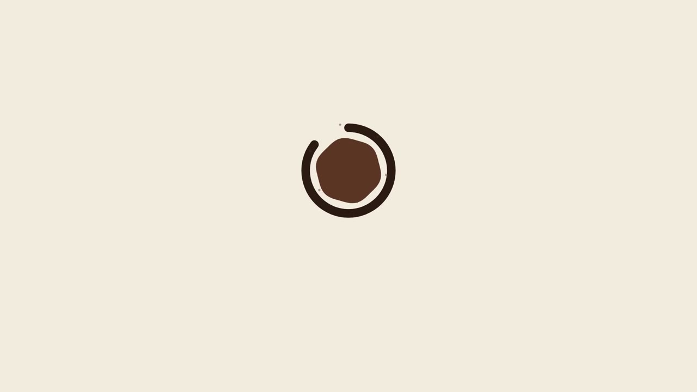
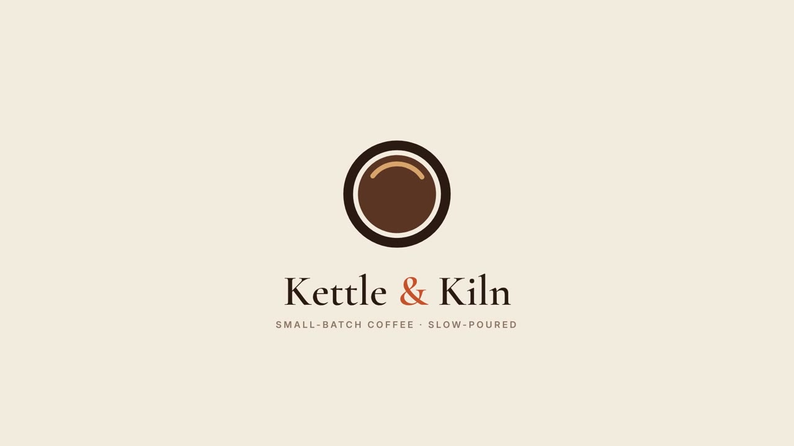
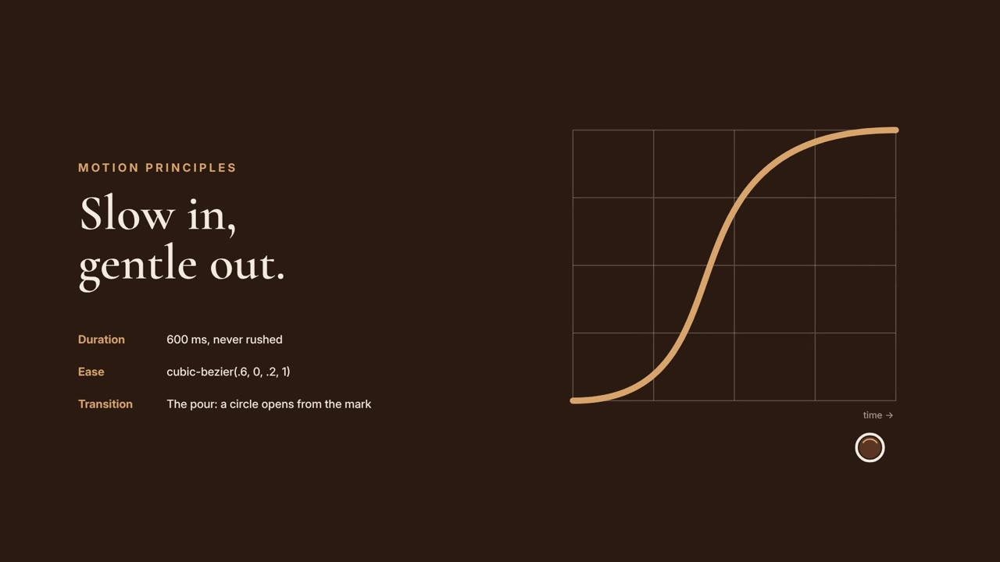
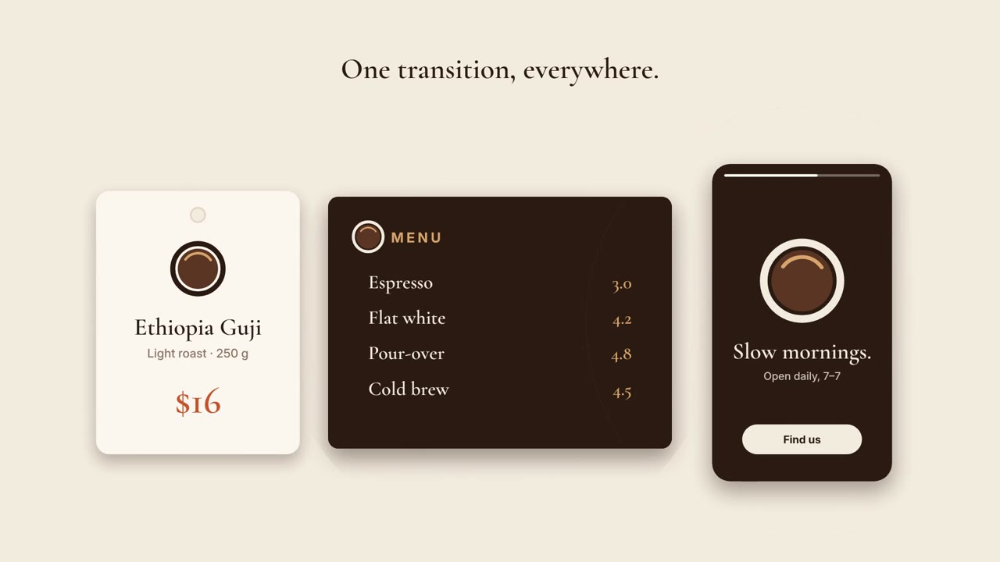
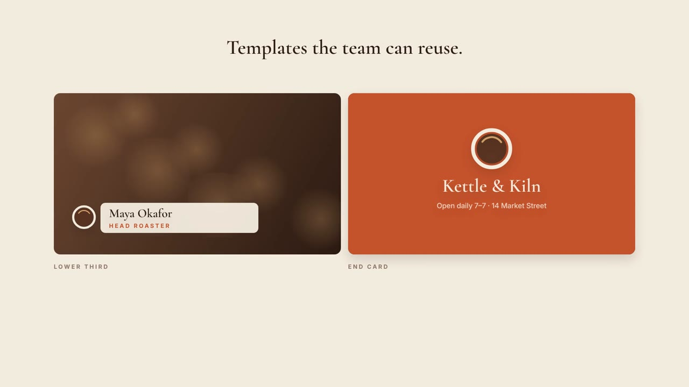
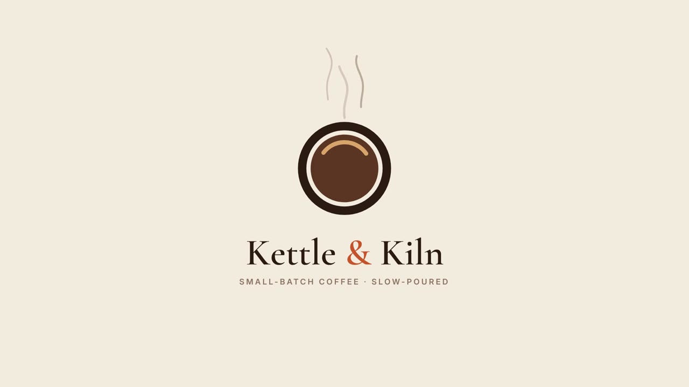

A motion system for an invented coffee roaster: a logo built from a pour, one circle transition reused across price tags, menu boards and stories, plus lower-third and end-card templates.
Format25s · 16:9 + 1:1
RoleConcept, design, animation, sound
BriefSelf-initiated
Year2026
Main cut1:1 re-composeLogo sting · 3.6 s
The brief
Build a motion system a brand can reuse, not just a logo animated once. Warm, crafted, slow-poured.
My role
Concept, design, animation, sound.
Tools
Made in code: HTML canvas, frame-by-frame render · Original music and sound design
Self-initiated brief: Kettle & Kiln is a fictional project made for this portfolio.
Process
Styleframes

The logo is made by its own idea: coffee pours in and draws the cup.

A cup seen from above, plus a serif wordmark. The ampersand is the only kiln orange.

The motion guideline: one ease, one duration, one transition, written down for the team.

The same circle wipe on a price tag, a menu board and a story, so every surface feels related.

Lower third and end card templates: practical pieces a client actually reuses.

Steam on the settled logo, so the film loops back to where it started.